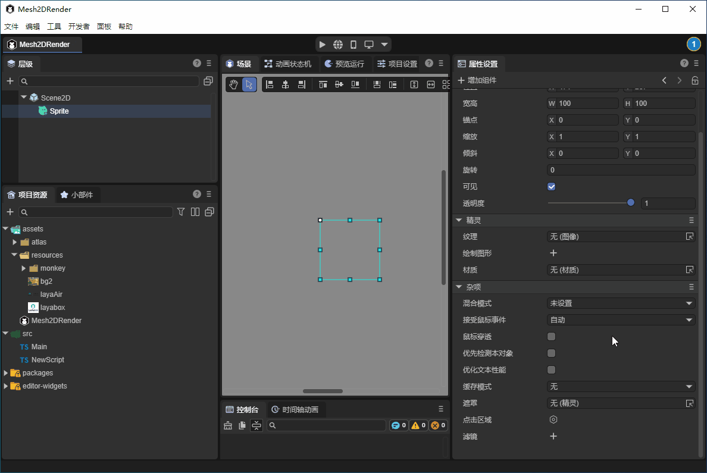
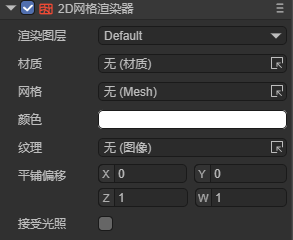
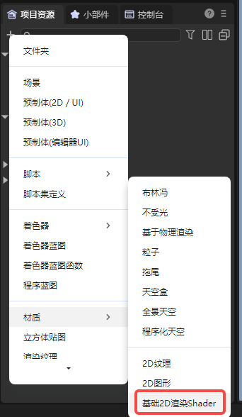
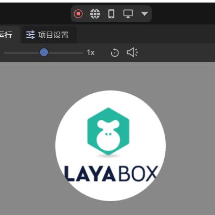
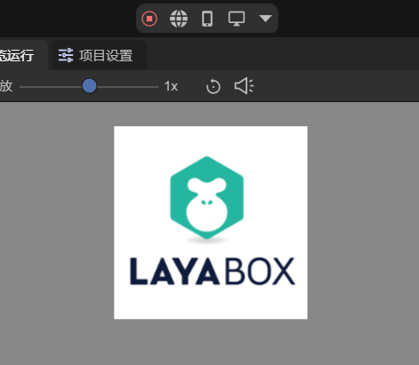

2D Mesh Renderer
1. Introduction
The 2D Mesh Renderer (Mesh2DRender) is used to display and render 2D meshes in 2D scenes, supports texture rendering, can set rendering colors, and can add custom materials to receive 2D lighting effects. Developers can use it to create complex 2D graphic effects, supports custom mesh shapes, and is suitable for making 2D game elements that require precise mesh control.
In game development, the 2D mesh renderer can achieve more complex and fine visual effects in 2D games. For example, creating 2D characters with special lighting effects, creating complex-shaped 2D objects, and implementing complex 2D effects.
In summary, this component can help developers break through the limitations of traditional 2D rendering and create richer and more unique effects.
2. Using in LayaAir-IDE
In LayaAir-IDE, create a sprite and add a 2D mesh renderer component to the sprite. As shown in Animated Figure 2-1.

(Figure 2-1)
The component properties after adding are shown in Figure 2-2.

(Figure 2-2)
The Render Layer and Receive Lighting properties are both related to lighting. For specific usage, please refer to the 2D Lighting documentation. Below, other properties are introduced separately:
2.1 Material
The 2D mesh renderer supports adding custom materials. In LayaAir-IDE, create a default material as BaseRender2D. As shown in Figure 2-3.

(Figure 2-3)
Add the material to the material property of the 2D mesh renderer. Developers can also change this shader template to customize effects.
For 2D shader usage, please check the document Custom 2D Shader.
As shown in Figure 2-4, using a custom shader achieves a gradient effect.
(Figure 2-4)
The shader code is as follows:
Shader3D Start
{
type:Shader3D,
name:baseRender2D,
enableInstancing:true,
supportReflectionProbe:true,
shaderType:2,
uniformMap:{
u_gradientDirection: {type: Vector2, default:[1,1]}, // Gradient direction
u_gradientStartColor: {type:Vector4, default:[1,1,1,1]}, // Gradient start color
u_gradientEndColor: {type:Vector4, default:[1,1,1,1]} // Gradient end color
},
attributeMap: {
a_position: Vector4,
a_color: Vector4,
a_uv: Vector2,
},
defines: {
BASERENDER2D: { type: bool, default: true }
}
shaderPass:[
{
pipeline:Forward,
VS:baseRenderVS,
FS:baseRenderPS
}
]
}
Shader3D End
GLSL Start
#defineGLSL baseRenderVS
#define SHADER_NAME baseRender2D
#include "Sprite2DVertex.glsl";
void main() {
vec4 pos;
//Calculate position first, then clip
getPosition(pos);
vertexInfo info;
getVertexInfo(info);
v_texcoord = info.uv;
v_color = info.color;
#ifdef LIGHT_AND_SHADOW
lightAndShadow(info);
#endif
[Content continues with shader code...]
This shader implements a gradient effect by defining gradient direction, start color, and end color properties. Developers can modify the shader code according to their needs to achieve various custom 2D rendering effects.
gl_Position = pos;
}
endGLSL
defineGLSL baseRenderPS
#define SHADER_NAME baseRender2D
#if defined(GL_FRAGMENT_PRECISION_HIGH)
precision highp float;
#else
precision mediump float;
#endif
#include "Sprite2DFrag.glsl";
void main()
{
clip();
vec4 textureColor = texture2D(u_baseRender2DTexture, v_texcoord);
// Calculate gradient factor
float gradientFactor = dot(v_texcoord, normalize(u_gradientDirection)) * 0.5 + 0.5;
// Mix gradient colors
vec4 gradientColor = mix(u_gradientStartColor, u_gradientEndColor, gradientFactor);
textureColor *= gradientColor;
#ifdef LIGHT_AND_SHADOW
lightAndShadow(textureColor);
#endif
textureColor = transspaceColor(textureColor);
setglColor(textureColor);
}
endGLSL
GLSL End
### 2.2 Mesh
2D meshes can be created in two ways. One method is the built-in LayaAir-IDE method. As shown in Figure 2-5, in the project resource panel, right-click on the image where you need to create a mesh and select "Create 2D Mesh".

(Figure 2-5)
Another method is through code creation. Refer to the code for `generateCircleVerticesAndUV` and `generateRectVerticesAndUV` in Section 3.
### 2.3 Texture and Color
The texture selection doesn't have to be the same as the image selected when creating the mesh. For example, if the image used to create the mesh is the one in Figure 2-6,

(Figure 2-6)
The texture can use the image in Figure 2-7,

(Figure 2-7)
The final effect is shown in Figure 2-8,

(Figure 2-8)
You can also change the color, the effect is shown in Figure 2-9,

(Figure 2-9)
### 2.4 Tiling Offset
The tiling offset property can change the position and scaling of the texture. The position change effect is shown in Animated Figure 2-10.

The scaling change effect is shown in Animated Figure 2-11.

## 3. Using Through Code
Create a new script in LayaAir-IDE, add it to the Scene2D node, then add the following code to implement a 2D mesh renderer effect:
```typescript
const { regClass, property } = Laya;
@regClass()
export class Mesh2DRender extends Laya.Script {
@property({type: Laya.Sprite})
private layaMonkey: Laya.Sprite;
//Executed after the component is enabled, for example after the node is added to the stage
onEnable(): void {
Laya.loader.load("resources/layabox.png", Laya.Loader.IMAGE).then(() => {
this.setMesh2DRender();
});
}
// Configure 2D mesh renderer
setMesh2DRender(): void {
let mesh2Drender = this.layaMonkey.getComponent(Laya.Mesh2DRender);
// Add mesh
mesh2Drender.sharedMesh = this.generateCircleVerticesAndUV(100, 100);
let tex = Laya.loader.getRes("resources/layabox.png");
mesh2Drender.texture = tex;
// mesh2Drender.color = new Laya.Color(0.8, 0.15, 0.15, 1);
// mesh2Drender.lightReceive = true;
}
/**
* Generate a circular 2D mesh
* @param radius The radius of the circle
* @param numSegments The number of segments the circle is divided into, the more segments the smoother the circle
*/
private generateCircleVerticesAndUV(radius: number, numSegments: number): Laya.Mesh2D {
// 2π
const twoPi = Math.PI * 2;
// Vertex array
let vertexs = new Float32Array((numSegments + 1) * 5);
// Index array
let index = new Uint16Array((numSegments + 1) * 3);
var pos = 0;
// Generate vertices on the circumference
for (let i = 0; i < numSegments; i++, pos += 5) {
const angle = twoPi * i / numSegments;
// Calculate vertex coordinates
var x = vertexs[pos + 0] = radius * Math.cos(angle);
var y = vertexs[pos + 1] = radius * Math.sin(angle);
vertexs[pos + 2] = 0; // z-coordinate is always 0 (2D)
// Calculate UV coordinates
vertexs[pos + 3] = 0.5 + x / (2 * radius); // Map x from [-radius, radius] to [0,1]
vertexs[pos + 4] = 0.5 + y / (2 * radius); // Map y from [-radius, radius] to [0,1]
}
//Center point
vertexs[pos] = 0;
vertexs[pos + 1] = 0;
vertexs[pos + 2] = 0;
vertexs[pos + 3] = 0.5;
vertexs[pos + 4] = 0.5;
// Generate triangle indices
for (var i = 1, ibIndex = 0; i < numSegments; i++, ibIndex += 3) {
index[ibIndex] = i;
index[ibIndex + 1] = i - 1;
index[ibIndex + 2] = numSegments;
}
// Handle the last triangle: connect the last vertex, first vertex, and center
index[ibIndex] = numSegments - 1;
index[ibIndex + 1] = 0;
index[ibIndex + 2] = numSegments;
// Vertex declaration
var declaration = Laya.VertexMesh2D.getVertexDeclaration(["POSITION,UV"], false)[0];
let mesh2D = Laya.Mesh2D.createMesh2DByPrimitive([vertexs], [declaration], index, Laya.IndexFormat.UInt16, [{ length: index.length, start: 0 }]);
return mesh2D;
}
}
The final effect is shown in Figure 3-1,

(Figure 3-1)
The example shows a circular mesh. Below is the code for a rectangular mesh,
/**
* Generate a rectangular 2D mesh
* @param width The width of the rectangle
* @param height The height of the rectangle
*/
private generateRectVerticesAndUV(width: number, height: number): Laya.Mesh2D {
const vertices = new Float32Array(4 * 5);
const indices = new Uint16Array(2 * 3);
let index = 0;
vertices[index++] = 0;
vertices[index++] = 0;
vertices[index++] = 0;
vertices[index++] = 0;
vertices[index++] = 0;
vertices[index++] = width;
vertices[index++] = 0;
vertices[index++] = 0;
vertices[index++] = 1;
vertices[index++] = 0;
vertices[index++] = width;
vertices[index++] = height;
vertices[index++] = 0;
vertices[index++] = 1;
vertices[index++] = 1;
vertices[index++] = 0;
vertices[index++] = height;
vertices[index++] = 0;
vertices[index++] = 0;
vertices[index++] = 1;
index = 0;
indices[index++] = 0;
indices[index++] = 1;
indices[index++] = 3;
indices[index++] = 1;
indices[index++] = 2;
indices[index++] = 3;
const declaration = Laya.VertexMesh2D.getVertexDeclaration(["POSITION,UV"], false)[0];
const mesh2D = Laya.Mesh2D.createMesh2DByPrimitive([vertices], [declaration], indices, Laya.IndexFormat.UInt16, [{ length: indices.length, start: 0 }]);
return mesh2D;
}
Just replace generateCircleVerticesAndUV in the example code. The effect is shown in Figure 3-2.

(Figure 3-2)